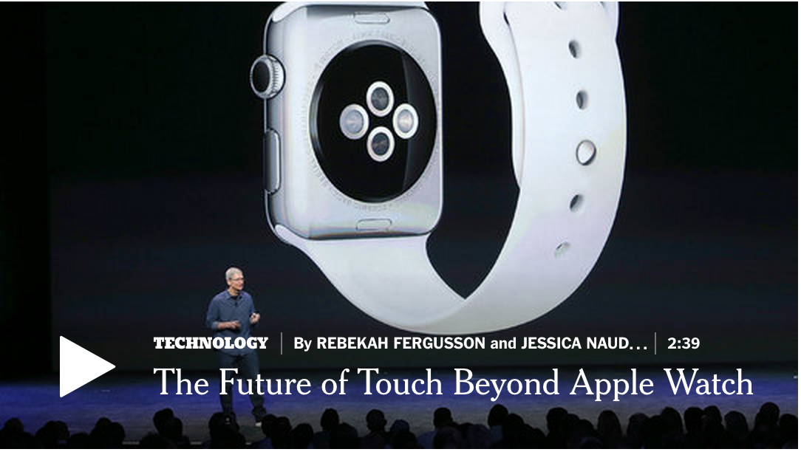

SAN FRANCISCO — As it nears a size and scope never before approached by a technology company, Apple is doing things its executives said it never would.
Apple’s co-founder, Steven P. Jobs, once announced that using a stylus with a computing device was passé. But guess what? The company is now offering a stylus, called Apple Pencil, for $100.
And in a move sure to make Apple old-timers squirm, the newest version of the iPad, which has an optional keyboard that attaches to the tablet, is even imitating some of the features of Microsoft’s competing product, called the Surface.
But the center of this ever-expanding Silicon Valley giant is still the iPhone, which accounts for 56 percent of Apple’s profits. And in a presentation that lasted more than two hours on Wednesday at the Bill Graham Civic Auditorium here, Apple executives emphasized several new iPhone features that — despite other announcements, ranging from an improved version of the company’s television controller to chic watchbands — are still the key to Apple’s success.
“Investors have been rewarded by assuming Apple can continually push the envelope on what a phone and the company can do,” said Michael A. Sansoterra, the chief investment officer at Silvant Capital Management, which owns Apple stock.
Because of the first iteration of the larger-screen iPhone 6 introduced last year, Apple’s fourth quarter of fiscal 2014, when the company had an $18 billion profit, was the most profitable quarter ever for a publicly traded company.
But meeting expectations is becoming a bigger challenge. In its most recent quarter, Apple posted quarterly revenue of $49.6 billion and a $10.7 billion profit; iPhone revenue was up 59 percent from the previous year. But those results still fell short of Wall Street estimates, and Apple’s share price tumbled 4 percent in the following day of trading.
Apple introduced its own payment plan. Starting at $32 a month, customers can upgrade their phones every year if they buy them through Apple. The new phones will be available in 12 countries, including the United States, on Sept. 25. They will be available to order starting Sept. 12.
But as was clear in the presentation on Wednesday, Apple is aggressively courting customers with other product lines as it competes with competitors like Microsoft, Samsung and Google to become the centerpiece of Internet-connected home entertainment systems.